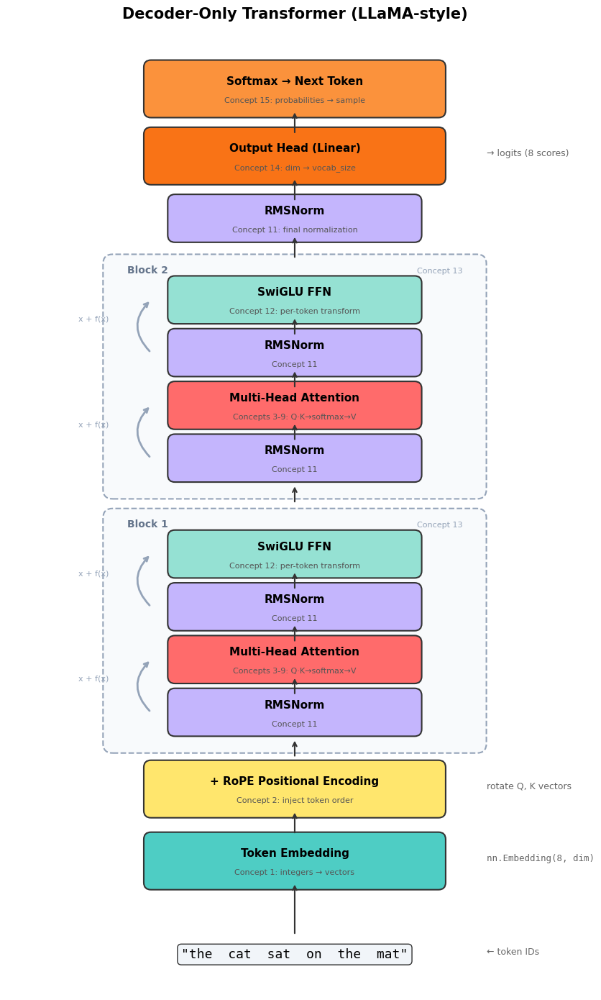
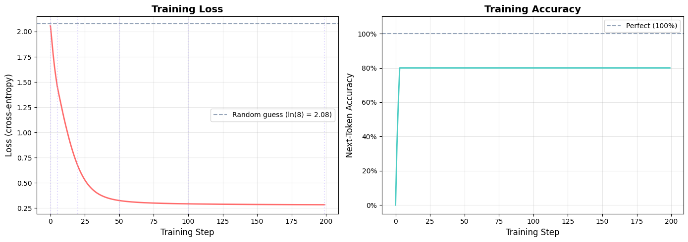
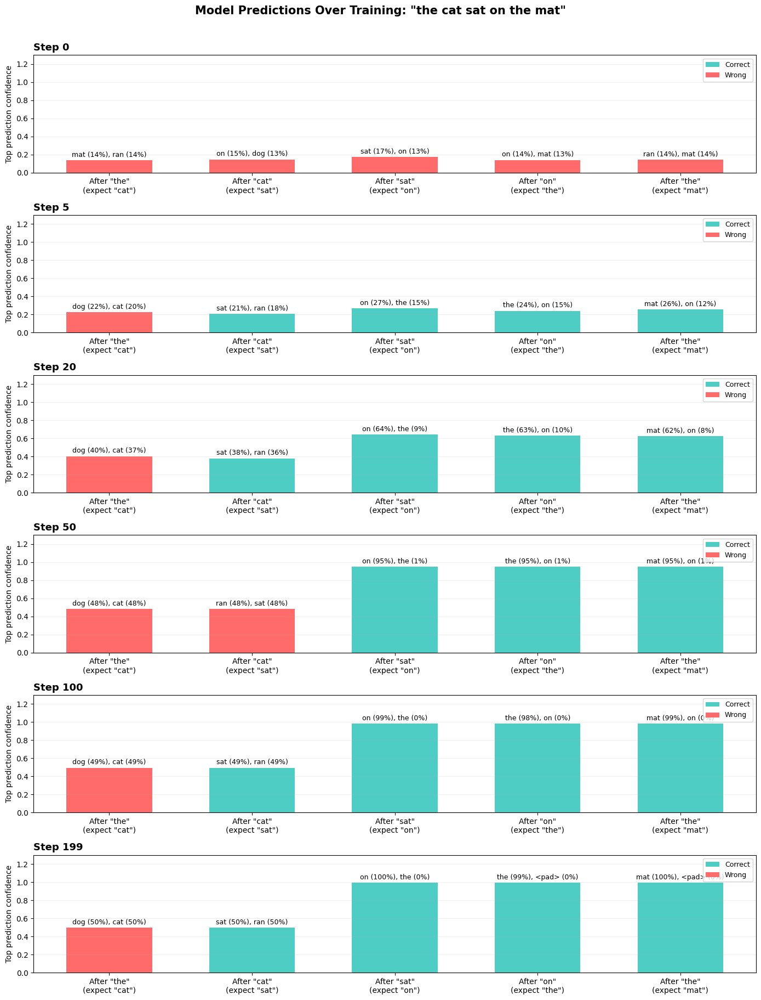
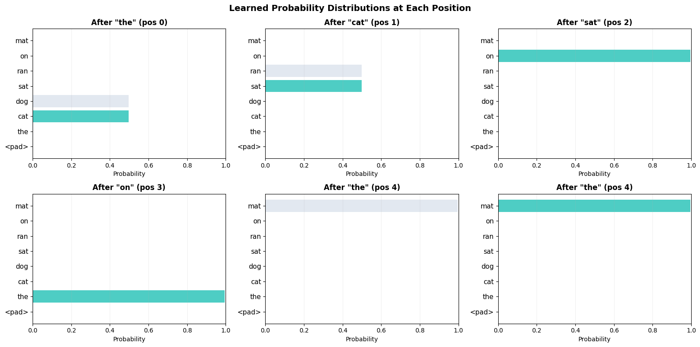

import sys
sys.path.insert(0, '../src')
import torch
import torch.nn as nn
import torch.nn.functional as F
import matplotlib.pyplot as plt
import matplotlib.patches as mpatches
import numpy as np
from ai_playground.models import Transformer, TransformerConfig
torch.manual_seed(42)
device = 'cpu' # tiny model, CPU is fineTransformer Visualization: Architecture & Training from Scratch
This notebook builds a tiny transformer with a toy vocabulary of 8 words and trains it for several steps so you can watch every concept come alive:
- Architecture diagram — see how data flows through the model
- Single forward pass — trace a sentence through every layer
- Training loop — watch the loss drop and predictions improve step by step
Concepts covered
| # | Concept | What to watch for |
|---|---|---|
| 1 | Embedding | Token IDs (integers) become vectors |
| 2 | Positional encoding | Same word at different positions gets different representations |
| 8 | Causal mask | Each token can only see tokens before it |
| 13 | Transformer block | Repeated N times — attention then FFN |
| 14 | Output head | Vectors become next-token predictions |
| 15 | Sampling | Pick the next token from the probability distribution |
Reference: “Attention Is All You Need” · The Annotated Transformer · docs/PAPERS.md
1. Our Tiny World
A vocabulary of just 8 tokens. The model’s job: learn to predict the next token.
We’ll teach it simple patterns like the cat sat on and the dog ran on.
# Tiny vocabulary — 8 tokens total
# In real LLMs this would be 32K-128K subword tokens from BPE
# (see docs/PAPERS.md § Tokenization, https://arxiv.org/abs/1508.07909)
VOCAB = ['<pad>', 'the', 'cat', 'dog', 'sat', 'ran', 'on', 'mat']
tok2id = {t: i for i, t in enumerate(VOCAB)}
id2tok = {i: t for t, i in tok2id.items()}
def tokenize(sentence):
return [tok2id[w] for w in sentence.split()]
def detokenize(ids):
return ' '.join(id2tok[i] for i in ids)
# Training sentences — simple patterns to learn
sentences = [
'the cat sat on the mat',
'the dog ran on the mat',
'the cat ran on the mat',
'the dog sat on the mat',
]
print('Vocabulary:', VOCAB)
print(f'vocab_size = {len(VOCAB)}\n')
for s in sentences:
ids = tokenize(s)
print(f' "{s}" → {ids}')Vocabulary: ['<pad>', 'the', 'cat', 'dog', 'sat', 'ran', 'on', 'mat']
vocab_size = 8
"the cat sat on the mat" → [1, 2, 4, 6, 1, 7]
"the dog ran on the mat" → [1, 3, 5, 6, 1, 7]
"the cat ran on the mat" → [1, 2, 5, 6, 1, 7]
"the dog sat on the mat" → [1, 3, 4, 6, 1, 7]2. Architecture Diagram
Let’s draw the transformer to see how data flows through it. This is the exact architecture implemented in src/ai_playground/models/transformer.py.
def draw_transformer_architecture(n_layers=2):
"""Draw a diagram of the decoder-only transformer architecture."""
fig, ax = plt.subplots(1, 1, figsize=(10, 14))
ax.set_xlim(-1, 11)
ax.set_ylim(-1, 20)
ax.axis('off')
ax.set_aspect('equal')
# Colors for each concept
C = {
'embed': '#4ECDC4', # teal
'rope': '#FFE66D', # yellow
'attn': '#FF6B6B', # red
'ffn': '#95E1D3', # light green
'norm': '#C4B5FD', # purple
'residual': '#94A3B8', # gray
'output': '#F97316', # orange
'softmax': '#FB923C', # light orange
}
def box(x, y, w, h, label, color, sublabel=None, fontsize=11):
rect = mpatches.FancyBboxPatch((x, y), w, h, boxstyle='round,pad=0.15',
facecolor=color, edgecolor='#333', linewidth=1.5)
ax.add_patch(rect)
ax.text(x + w/2, y + h/2 + (0.15 if sublabel else 0), label,
ha='center', va='center', fontsize=fontsize, fontweight='bold')
if sublabel:
ax.text(x + w/2, y + h/2 - 0.25, sublabel,
ha='center', va='center', fontsize=8, color='#555')
def arrow(x1, y1, x2, y2, color='#333'):
ax.annotate('', xy=(x2, y2), xytext=(x1, y1),
arrowprops=dict(arrowstyle='->', color=color, lw=1.5))
# --- Input tokens ---
y = 0
ax.text(5, y, '"the cat sat on the mat"', ha='center', va='center',
fontsize=13, fontfamily='monospace',
bbox=dict(boxstyle='round,pad=0.3', facecolor='#F1F5F9', edgecolor='#333'))
ax.text(9, y, '← token IDs', ha='left', fontsize=9, color='#666')
# --- Embedding ---
y = 1.5
arrow(5, 0.4, 5, y)
box(2, y, 6, 0.9, 'Token Embedding', C['embed'], 'Concept 1: integers → vectors')
ax.text(9, y + 0.45, f'nn.Embedding({len(VOCAB)}, dim)', ha='left', fontsize=9,
color='#666', fontfamily='monospace')
# --- RoPE ---
y = 3.0
arrow(5, 2.5, 5, y)
box(2, y, 6, 0.9, '+ RoPE Positional Encoding', C['rope'], 'Concept 2: inject token order')
ax.text(9, y + 0.45, 'rotate Q, K vectors', ha='left', fontsize=9, color='#666')
# --- Transformer blocks ---
block_start = 4.5
block_h = 4.5
for i in range(n_layers):
by = block_start + i * (block_h + 0.8)
arrow(5, by - 0.4, 5, by)
# Block border
block_rect = mpatches.FancyBboxPatch((1.2, by - 0.1), 7.6, block_h + 0.2,
boxstyle='round,pad=0.2', facecolor='#F8FAFC', edgecolor='#94A3B8',
linewidth=1.5, linestyle='--')
ax.add_patch(block_rect)
ax.text(1.5, by + block_h - 0.1, f'Block {i+1}', fontsize=10,
fontweight='bold', color='#64748B')
ax.text(8.5, by + block_h - 0.1, 'Concept 13', fontsize=8, color='#94A3B8', ha='right')
# RMSNorm
ny1 = by + 0.2
box(2.5, ny1, 5, 0.7, 'RMSNorm', C['norm'], 'Concept 11')
# Attention
ay = ny1 + 1.1
arrow(5, ny1 + 0.7, 5, ay)
box(2.5, ay, 5, 0.7, 'Multi-Head Attention', C['attn'], 'Concepts 3-9: Q·K→softmax→V')
# Residual arrow for attention
ax.annotate('', xy=(2.0, ay + 0.35), xytext=(2.0, ny1 + 0.35),
arrowprops=dict(arrowstyle='->', color=C['residual'], lw=2,
connectionstyle='arc3,rad=-0.5'))
ax.text(0.8, ay - 0.1, 'x + f(x)', fontsize=8, color=C['residual'], ha='center')
# RMSNorm 2
ny2 = ay + 1.1
arrow(5, ay + 0.7, 5, ny2)
box(2.5, ny2, 5, 0.7, 'RMSNorm', C['norm'], 'Concept 11')
# FFN
fy = ny2 + 1.1
arrow(5, ny2 + 0.7, 5, fy)
box(2.5, fy, 5, 0.7, 'SwiGLU FFN', C['ffn'], 'Concept 12: per-token transform')
# Residual arrow for FFN
ax.annotate('', xy=(2.0, fy + 0.35), xytext=(2.0, ny2 + 0.35),
arrowprops=dict(arrowstyle='->', color=C['residual'], lw=2,
connectionstyle='arc3,rad=-0.5'))
ax.text(0.8, fy - 0.1, 'x + f(x)', fontsize=8, color=C['residual'], ha='center')
# --- Final norm ---
ny = block_start + n_layers * (block_h + 0.8) - 0.1
arrow(5, ny - 0.5, 5, ny)
box(2.5, ny, 5, 0.7, 'RMSNorm', C['norm'], 'Concept 11: final normalization')
# --- Output head ---
oy = ny + 1.2
arrow(5, ny + 0.7, 5, oy)
box(2, oy, 6, 0.9, 'Output Head (Linear)', C['output'], 'Concept 14: dim → vocab_size')
ax.text(9, oy + 0.45, f'→ logits ({len(VOCAB)} scores)', ha='left', fontsize=9, color='#666')
# --- Softmax ---
sy = oy + 1.4
arrow(5, oy + 0.9, 5, sy)
box(2, sy, 6, 0.9, 'Softmax → Next Token', C['softmax'], 'Concept 15: probabilities → sample')
ax.set_ylim(-0.8, sy + 1.6)
ax.set_title('Decoder-Only Transformer (LLaMA-style)', fontsize=15, fontweight='bold', pad=15)
plt.tight_layout()
plt.show()
draw_transformer_architecture(n_layers=2)
2b. Understanding the Building Blocks
The architecture diagram above shows several components that deserve explanation before we start training. Each one solves a specific problem.
RMSNorm (the purple boxes)
Problem: As vectors flow through many layers, their magnitudes can grow or shrink uncontrollably. A vector that was [0.1, 0.2, 0.3] might become [500, 1000, 1500] after a few layers. This makes training unstable.
Solution: Normalize each vector to have unit RMS (root mean square). Divide by the vector’s average magnitude, then scale by a learned weight:
rms = sqrt(mean(x²))
output = (x / rms) * weightThat’s it. Standard LayerNorm also subtracts the mean (centering), but Zhang & Sennrich (2019) showed the centering is unnecessary — removing it makes RMSNorm ~10-15% faster with no quality loss. Used in LLaMA, Mistral, Gemma, and most modern LLMs.
Implementation: src/ai_playground/models/layers.py → RMSNorm Paper: Root Mean Square Layer Normalization See also: docs/PAPERS.md § Normalization & Activations
SwiGLU FFN (the green boxes)
Problem: Attention lets tokens talk to each other, but it’s a linear operation (weighted average). The model also needs a nonlinear transformation applied to each token independently — this is where the model stores “knowledge” (facts, patterns, associations) in its weight matrices.
Solution: A feed-forward network (FFN) with a gated activation:
gate = swish(x @ W_gate) ← "how much to let through" (0 to 1-ish)
value = x @ W_up ← "what to let through"
output = (gate * value) @ W_downThe swish function (= x × sigmoid(x)) is a smooth version of ReLU. The gating mechanism (multiply gate × value) lets the network learn to selectively activate different dimensions — like an if/else in the vector space.
Standard FFN uses 2 weight matrices. SwiGLU uses 3 (gate, up, down), but the hidden dimension is reduced by 2/3, so total parameters are similar while performance is consistently better.
Implementation: src/ai_playground/models/layers.py → SwiGLU Paper: GLU Variants Improve Transformer (Shazeer, 2020) See also: docs/PAPERS.md § Normalization & Activations
Why Softmax? (the orange boxes)
Problem: The model’s output is a vector of raw scores (logits) — one per vocabulary token. We need to convert these into probabilities that sum to 1 so we can sample the next token.
Why not just divide by the sum? Logits can be negative, and we want the highest score to get the most probability, with an exponential preference:
softmax(x_i) = exp(x_i) / sum(exp(x_j))- A score of 5.0 vs 3.0: softmax gives ~88% vs ~12% (strong preference)
- A score of 1.0 vs 0.9: softmax gives ~52% vs ~48% (near-uniform)
The exponential amplifies differences — the model can be confidently decisive (one token dominates) or express genuine uncertainty (several tokens are plausible).
Softmax also appears inside attention (concept 6): after computing Q·K scores, softmax converts them to attention weights that sum to 1 for each query position. Same logic — we want a probability distribution over which tokens to attend to.
Reference: “Attention Is All You Need” §3.2.1
The AdamW Optimizer (used in training below)
Problem: Gradient descent says “move parameters opposite to the gradient.” But how far? And what if gradients are noisy (different every batch)?
Solution: AdamW tracks two running averages for each parameter:
Momentum (m): smoothed gradient direction — filters out noise, like a rolling average. If gradients consistently point left, momentum builds up and we take bigger steps left.
Velocity (v): smoothed gradient magnitude — tells us how “steep” the landscape is around this parameter. Parameters with large gradients get smaller effective learning rates (careful steps), and vice versa.
The update: θ = θ - lr × momentum / sqrt(velocity)
The “W” in AdamW: weight decay is applied directly to parameters (θ = θ × (1 - lr × λ)) rather than through the gradient. This simple fix, decoupling weight decay from the adaptive learning rate, meaningfully improves training.
Implementation: src/ai_playground/training/optimizers.py → AdamWFromScratch For the full step-by-step build: notebooks/02_training_optimization/04_adamw_from_scratch.ipynb Paper: Decoupled Weight Decay Regularization (Loshchilov & Hutter, 2019) See also: docs/PAPERS.md § Training Optimization
# === RMSNorm in action ===
from ai_playground.models.layers import RMSNorm
x = torch.tensor([[3.0, 1.0, 4.0, 1.0, 5.0]]) # a vector with varying magnitudes
norm = RMSNorm(5)
with torch.no_grad():
x_normed = norm(x)
rms = x.pow(2).mean().sqrt()
print('=== RMSNorm ===')
print(f'Input: {x[0].tolist()} (RMS = {rms:.2f})')
print(f'Normalized: {[round(v, 4) for v in x_normed[0].tolist()]}')
print(f'After norm, RMS \u2248 1.0 \u2014 magnitudes are controlled.\n')
# === SwiGLU FFN in action ===
from ai_playground.models.layers import SwiGLU
ffn = SwiGLU(dim=8, hidden_dim=16)
x_ffn = torch.randn(1, 3, 8) # (batch=1, seq=3, dim=8)
with torch.no_grad():
y_ffn = ffn(x_ffn)
print('=== SwiGLU FFN ===')
print(f'Input shape: {list(x_ffn.shape)} (batch, seq, dim)')
print(f'Output shape: {list(y_ffn.shape)} (same \u2014 FFN transforms each token independently)')
print(f'Hidden dim: 16 (expanded from 8 for more expressive intermediate repr)')
print(f'Num params: {sum(p.numel() for p in ffn.parameters())} (3 matrices: gate, up, down)\n')
# === Softmax in action ===
print('=== Why Softmax? ===')
logits = torch.tensor([5.0, 3.0, 1.0, -1.0, -3.0])
probs = F.softmax(logits, dim=-1)
print(f'Raw logits: {logits.tolist()}')
print(f'Softmax probs: {[f"{p:.1%}" for p in probs.tolist()]}')
print(f'Sum of probs: {probs.sum().item():.4f} (always 1.0)')
print(f'Highest logit (5.0) gets {probs[0]:.0%} of probability \u2014 exponential amplifies differences.\n')
# Temperature effect (used in generation)
print('Temperature controls sharpness:')
for temp in [0.5, 1.0, 2.0]:
p = F.softmax(logits / temp, dim=-1)
label = "sharper" if temp < 1 else "flatter" if temp > 1 else "default"
print(f' temp={temp}: {[f"{v:.1%}" for v in p.tolist()]} ({label})')
print('\nLow temperature \u2192 more confident. High temperature \u2192 more random.')=== RMSNorm ===
Input: [3.0, 1.0, 4.0, 1.0, 5.0] (RMS = 3.22)
Normalized: [0.9303, 0.3101, 1.2403, 0.3101, 1.5504]
After norm, RMS ≈ 1.0 — magnitudes are controlled.
=== SwiGLU FFN ===
Input shape: [1, 3, 8] (batch, seq, dim)
Output shape: [1, 3, 8] (same — FFN transforms each token independently)
Hidden dim: 16 (expanded from 8 for more expressive intermediate repr)
Num params: 384 (3 matrices: gate, up, down)
=== Why Softmax? ===
Raw logits: [5.0, 3.0, 1.0, -1.0, -3.0]
Softmax probs: ['86.5%', '11.7%', '1.6%', '0.2%', '0.0%']
Sum of probs: 1.0000 (always 1.0)
Highest logit (5.0) gets 86% of probability — exponential amplifies differences.
Temperature controls sharpness:
temp=0.5: ['98.2%', '1.8%', '0.0%', '0.0%', '0.0%'] (sharper)
temp=1.0: ['86.5%', '11.7%', '1.6%', '0.2%', '0.0%'] (default)
temp=2.0: ['63.6%', '23.4%', '8.6%', '3.2%', '1.2%'] (flatter)
Low temperature → more confident. High temperature → more random.3. Build Our Tiny Model
A 2-layer transformer with dim=32. Small enough to watch every detail, but uses the exact same code as the larger configs.
# Tiny config — same TransformerConfig, just very small numbers
config = TransformerConfig(
vocab_size=len(VOCAB), # 8 tokens
dim=32, # 32-dimensional vectors
n_layers=2, # 2 transformer blocks
n_heads=4, # 4 attention heads
n_kv_heads=2, # GQA: 2 KV heads shared by 4 Q heads
max_seq_len=16,
ffn_dim_multiplier=2.0,
)
model = Transformer(config).to(device)
n_params = sum(p.numel() for p in model.parameters())
print(f'Model: {config.n_layers} layers, dim={config.dim}, {n_params:,} parameters')
print(f'Vocab: {len(VOCAB)} tokens')
print(f'Head dim: {config.head_dim}, KV heads: {config.kv_heads}')Model: 2 layers, dim=32, 19,104 parameters
Vocab: 8 tokens
Head dim: 8, KV heads: 24. Trace a Single Forward Pass
Let’s follow the sentence "the cat sat on the mat" through the model and see what comes out at each stage.
# Tokenize and prepare input
sentence = 'the cat sat on the mat'
tokens = tokenize(sentence)
token_ids = torch.tensor([tokens], device=device) # (1, 6)
print(f'Input: "{sentence}"')
print(f'Token IDs: {tokens}')
print(f'Shape: {token_ids.shape} (batch=1, seq_len=6)\n')
# --- Concept 1: Embedding ---
with torch.no_grad():
embeddings = model.tok_embeddings(token_ids)
print(f'After embedding (concept 1):')
print(f' Shape: {embeddings.shape} (batch, seq_len, dim={config.dim})')
print(f' Each token is now a {config.dim}-dim vector')
print(f' "the" → [{embeddings[0, 0, :4].tolist()} ...]')
print(f' "cat" → [{embeddings[0, 1, :4].tolist()} ...]\n')
# --- Concept 2: Same word, different position ---
print(f'Same word "the" at position 0 vs position 4:')
print(f' Position 0: [{embeddings[0, 0, :6].tolist()} ...]')
print(f' Position 4: [{embeddings[0, 4, :6].tolist()} ...]')
print(f' Before RoPE these are identical — RoPE rotates Q,K inside attention')
print(f' to make the model aware of position.\n')
# --- Full forward pass → logits ---
with torch.no_grad():
logits = model(token_ids) # (1, 6, vocab_size)
print(f'Output logits (concept 14):')
print(f' Shape: {logits.shape} (batch, seq_len, vocab_size={config.vocab_size})')
print(f' Each position has {config.vocab_size} scores — one per vocabulary token\n')
# --- Concept 15: Softmax → probabilities ---
probs = F.softmax(logits[0], dim=-1) # (6, 8)
print('Predictions at each position (before training — random!):')
for i in range(len(tokens)):
top_prob, top_id = probs[i].topk(3)
preds = ', '.join(f'{id2tok[j.item()]}({p:.0%})' for p, j in zip(top_prob, top_id))
target = id2tok[tokens[i+1]] if i+1 < len(tokens) else '(end)'
print(f' After "{id2tok[tokens[i]]}" → predicts: {preds} (should be: {target})')Input: "the cat sat on the mat"
Token IDs: [1, 2, 4, 6, 1, 7]
Shape: torch.Size([1, 6]) (batch=1, seq_len=6)
After embedding (concept 1):
Shape: torch.Size([1, 6, 32]) (batch, seq_len, dim=32)
Each token is now a 32-dim vector
"the" → [[-0.0320155955851078, -0.009524675086140633, 0.0022061688359826803, -0.0008383149397559464] ...]
"cat" → [[0.004457029979676008, 0.03946416452527046, -0.01665784791111946, 0.005129831377416849] ...]
Same word "the" at position 0 vs position 4:
Position 0: [[-0.0320155955851078, -0.009524675086140633, 0.0022061688359826803, -0.0008383149397559464, -0.006199481897056103, 0.001743849366903305] ...]
Position 4: [[-0.0320155955851078, -0.009524675086140633, 0.0022061688359826803, -0.0008383149397559464, -0.006199481897056103, 0.001743849366903305] ...]
Before RoPE these are identical — RoPE rotates Q,K inside attention
to make the model aware of position.
Output logits (concept 14):
Shape: torch.Size([1, 6, 8]) (batch, seq_len, vocab_size=8)
Each position has 8 scores — one per vocabulary token
Predictions at each position (before training — random!):
After "the" → predicts: mat(14%), ran(14%), sat(13%) (should be: cat)
After "cat" → predicts: on(15%), dog(13%), cat(13%) (should be: sat)
After "sat" → predicts: sat(17%), on(13%), mat(13%) (should be: on)
After "on" → predicts: on(14%), mat(13%), the(13%) (should be: the)
After "the" → predicts: ran(14%), mat(14%), on(13%) (should be: mat)
After "mat" → predicts: ran(16%), mat(13%), the(13%) (should be: (end))5. Training: Watch the Model Learn
Now let’s train for 200 steps and track: - Loss — how wrong the predictions are (lower = better) - Predictions — what the model thinks comes next - Accuracy — fraction of correct next-token predictions
The training objective is next-token prediction: given the cat sat, predict that on comes next. This is done at every position simultaneously.
# Prepare training data: input = tokens[:-1], target = tokens[1:]
# "the cat sat on the mat" → input: "the cat sat on the", target: "cat sat on the mat"
train_x = []
train_y = []
for s in sentences:
ids = tokenize(s)
train_x.append(ids[:-1]) # all tokens except last
train_y.append(ids[1:]) # all tokens except first (shifted by 1)
train_x = torch.tensor(train_x, device=device) # (4, 5)
train_y = torch.tensor(train_y, device=device) # (4, 5)
print('Training data (next-token prediction):')
print(f' Batch size: {train_x.shape[0]} sentences')
print(f' Sequence length: {train_x.shape[1]} tokens\n')
for i in range(len(sentences)):
inp = [id2tok[j.item()] for j in train_x[i]]
tgt = [id2tok[j.item()] for j in train_y[i]]
print(f' Input: {inp}')
print(f' Target: {tgt}\n')Training data (next-token prediction):
Batch size: 4 sentences
Sequence length: 5 tokens
Input: ['the', 'cat', 'sat', 'on', 'the']
Target: ['cat', 'sat', 'on', 'the', 'mat']
Input: ['the', 'dog', 'ran', 'on', 'the']
Target: ['dog', 'ran', 'on', 'the', 'mat']
Input: ['the', 'cat', 'ran', 'on', 'the']
Target: ['cat', 'ran', 'on', 'the', 'mat']
Input: ['the', 'dog', 'sat', 'on', 'the']
Target: ['dog', 'sat', 'on', 'the', 'mat']
# Training loop
# AdamW optimizer (https://arxiv.org/abs/1711.05101)
# See docs/PAPERS.md § Training Optimization
optimizer = torch.optim.AdamW(model.parameters(), lr=3e-3, weight_decay=0.01)
n_steps = 200
log_every = 10
snapshot_steps = [0, 5, 20, 50, 100, 199] # capture predictions at these steps
losses = []
accuracies = []
snapshots = [] # (step, predictions_per_position)
model.train()
for step in range(n_steps):
logits = model(train_x) # (4, 5, 8)
loss = F.cross_entropy(logits.view(-1, config.vocab_size), train_y.view(-1))
optimizer.zero_grad()
loss.backward()
optimizer.step()
# Track metrics
with torch.no_grad():
preds = logits.argmax(dim=-1) # (4, 5)
acc = (preds == train_y).float().mean().item()
losses.append(loss.item())
accuracies.append(acc)
# Snapshot predictions for visualization
if step in snapshot_steps:
with torch.no_grad():
probs = F.softmax(logits[0], dim=-1) # first sentence
snap = []
for i in range(train_x.shape[1]):
top_p, top_i = probs[i].topk(3)
snap.append([(id2tok[j.item()], p.item()) for p, j in zip(top_p, top_i)])
snapshots.append((step, snap))
if step % log_every == 0 or step == n_steps - 1:
print(f'Step {step:3d} | loss: {loss.item():.4f} | accuracy: {acc:.0%}')
print(f'\nFinal loss: {losses[-1]:.4f}, Final accuracy: {accuracies[-1]:.0%}')Step 0 | loss: 2.0613 | accuracy: 0%
Step 10 | loss: 1.1334 | accuracy: 80%
Step 20 | loss: 0.6645 | accuracy: 80%
Step 30 | loss: 0.4413 | accuracy: 80%
Step 40 | loss: 0.3564 | accuracy: 80%
Step 50 | loss: 0.3237 | accuracy: 80%
Step 60 | loss: 0.3089 | accuracy: 80%
Step 70 | loss: 0.3011 | accuracy: 80%
Step 80 | loss: 0.2964 | accuracy: 80%
Step 90 | loss: 0.2932 | accuracy: 80%
Step 100 | loss: 0.2908 | accuracy: 80%
Step 110 | loss: 0.2890 | accuracy: 80%
Step 120 | loss: 0.2875 | accuracy: 80%
Step 130 | loss: 0.2864 | accuracy: 80%
Step 140 | loss: 0.2854 | accuracy: 80%
Step 150 | loss: 0.2846 | accuracy: 80%
Step 160 | loss: 0.2839 | accuracy: 80%
Step 170 | loss: 0.2833 | accuracy: 80%
Step 180 | loss: 0.2827 | accuracy: 80%
Step 190 | loss: 0.2823 | accuracy: 80%
Step 199 | loss: 0.2819 | accuracy: 80%
Final loss: 0.2819, Final accuracy: 80%6. Loss & Accuracy Over Training
Loss measures how surprised the model is by the correct answer (cross-entropy). It starts high (random guessing over 8 tokens → loss ≈ ln(8) ≈ 2.08) and drops as the model learns the patterns.
fig, (ax1, ax2) = plt.subplots(1, 2, figsize=(14, 5))
# Loss curve
ax1.plot(losses, color='#FF6B6B', linewidth=2)
ax1.axhline(y=np.log(len(VOCAB)), color='#94A3B8', linestyle='--', label=f'Random guess (ln({len(VOCAB)}) = {np.log(len(VOCAB)):.2f})')
ax1.set_xlabel('Training Step', fontsize=12)
ax1.set_ylabel('Loss (cross-entropy)', fontsize=12)
ax1.set_title('Training Loss', fontsize=14, fontweight='bold')
ax1.legend(fontsize=10)
ax1.grid(True, alpha=0.3)
# Mark snapshot steps
for s, _ in snapshots:
ax1.axvline(x=s, color='#C4B5FD', alpha=0.5, linestyle=':')
# Accuracy curve
ax2.plot(accuracies, color='#4ECDC4', linewidth=2)
ax2.axhline(y=1.0, color='#94A3B8', linestyle='--', label='Perfect (100%)')
ax2.set_xlabel('Training Step', fontsize=12)
ax2.set_ylabel('Next-Token Accuracy', fontsize=12)
ax2.set_title('Training Accuracy', fontsize=14, fontweight='bold')
ax2.set_ylim(-0.05, 1.1)
ax2.yaxis.set_major_formatter(plt.FuncFormatter(lambda y, _: f'{y:.0%}'))
ax2.legend(fontsize=10)
ax2.grid(True, alpha=0.3)
plt.tight_layout()
plt.show()
7. Predictions at Each Training Step
Watch the model go from random guessing to confident correct predictions. We trace the first sentence: "the cat sat on the mat".
input_tokens = [id2tok[j.item()] for j in train_x[0]]
target_tokens = [id2tok[j.item()] for j in train_y[0]]
fig, axes = plt.subplots(len(snapshots), 1, figsize=(14, 3 * len(snapshots)))
for idx, (step, snap) in enumerate(snapshots):
ax = axes[idx]
positions = range(len(input_tokens))
# Build heatmap data: (n_positions, vocab_size) but only show top predictions
bars_correct = []
bars_wrong = []
labels = []
for i, preds in enumerate(snap):
target = target_tokens[i]
top_word, top_prob = preds[0]
correct = (top_word == target)
bars_correct.append(top_prob if correct else 0)
bars_wrong.append(top_prob if not correct else 0)
pred_str = ', '.join(f'{w} ({p:.0%})' for w, p in preds[:2])
labels.append(pred_str)
x = np.arange(len(input_tokens))
ax.bar(x, bars_correct, color='#4ECDC4', label='Correct', width=0.6)
ax.bar(x, bars_wrong, color='#FF6B6B', label='Wrong', width=0.6)
# Annotate
for i, label in enumerate(labels):
ax.text(i, max(bars_correct[i], bars_wrong[i]) + 0.02, label,
ha='center', va='bottom', fontsize=9, rotation=0)
ax.set_xticks(x)
ax.set_xticklabels([f'After "{t}"\n(expect "{target_tokens[i]}")'
for i, t in enumerate(input_tokens)], fontsize=10)
ax.set_ylim(0, 1.3)
ax.set_ylabel('Top prediction confidence')
ax.set_title(f'Step {step}', fontsize=13, fontweight='bold', loc='left')
ax.legend(loc='upper right', fontsize=9)
ax.grid(True, alpha=0.2, axis='y')
plt.suptitle('Model Predictions Over Training: "the cat sat on the mat"',
fontsize=15, fontweight='bold', y=1.01)
plt.tight_layout()
plt.show()
8. What Did the Model Learn?
Let’s look at the final probability distribution at each position. A well-trained model should be confident about deterministic positions (the → always followed by cat or dog) and uncertain where multiple options are valid.
model.eval()
fig, axes = plt.subplots(2, 3, figsize=(16, 8))
axes = axes.flatten()
sentence = 'the cat sat on the'
tokens_viz = tokenize(sentence)
token_ids_viz = torch.tensor([tokens_viz], device=device)
with torch.no_grad():
logits_viz = model(token_ids_viz)
probs_viz = F.softmax(logits_viz[0], dim=-1)
for i, ax in enumerate(axes[:len(tokens_viz)]):
p = probs_viz[i].cpu().numpy()
colors = ['#4ECDC4' if j == (tokens_viz[i+1] if i+1 < len(tokens_viz) else -1)
else '#E2E8F0' for j in range(len(VOCAB))]
ax.barh(range(len(VOCAB)), p, color=colors)
ax.set_yticks(range(len(VOCAB)))
ax.set_yticklabels(VOCAB, fontsize=11)
ax.set_xlim(0, 1)
ax.set_xlabel('Probability', fontsize=10)
ax.set_title(f'After "{id2tok[tokens_viz[i]]}" (pos {i})', fontsize=12, fontweight='bold')
ax.grid(True, alpha=0.2, axis='x')
# Last subplot: show prediction for the full sequence
ax = axes[len(tokens_viz)]
p = probs_viz[-1].cpu().numpy()
colors = ['#4ECDC4' if VOCAB[j] == 'mat' else '#E2E8F0' for j in range(len(VOCAB))]
ax.barh(range(len(VOCAB)), p, color=colors)
ax.set_yticks(range(len(VOCAB)))
ax.set_yticklabels(VOCAB, fontsize=11)
ax.set_xlim(0, 1)
ax.set_xlabel('Probability', fontsize=10)
ax.set_title(f'After "the" (pos {len(tokens_viz)-1})', fontsize=12, fontweight='bold')
ax.grid(True, alpha=0.2, axis='x')
plt.suptitle('Learned Probability Distributions at Each Position',
fontsize=14, fontweight='bold')
plt.tight_layout()
plt.show()
print('Green = correct next token.')
print('Notice: after "the" the model may assign probability to both "cat" and "dog"')
print('because both are valid continuations in our training data.')
Green = correct next token.
Notice: after "the" the model may assign probability to both "cat" and "dog"
because both are valid continuations in our training data.9. Generate New Text
Let’s use the trained model to generate text autoregressively. Starting from "the", the model picks the next token, appends it, and repeats — using the KV cache for efficiency (see inference/generate.py).
def generate_tiny(model, prompt, max_tokens=6, temperature=0.8):
"""Simple autoregressive generation for our tiny model.
At each step:
1. Forward pass → logits (concept 14)
2. Softmax + temperature → probabilities (concept 15)
3. Sample next token
4. Append and repeat
Reference: "The Curious Case of Neural Text Degeneration" (Holtzman et al., 2020)
https://arxiv.org/abs/1904.09751
"""
model.eval()
tokens = tokenize(prompt)
print(f'Prompt: "{prompt}"')
print(f'Token IDs: {tokens}')
print()
steps = []
for step in range(max_tokens):
input_ids = torch.tensor([tokens], device=device)
with torch.no_grad():
logits = model(input_ids)
# Take logits at last position, apply temperature
next_logits = logits[0, -1] / temperature
probs = F.softmax(next_logits, dim=-1)
# Sample
next_id = torch.multinomial(probs, 1).item()
next_word = id2tok[next_id]
# Log this step
top3 = probs.topk(3)
top3_str = ', '.join(f'{id2tok[j.item()]}({p:.0%})' for p, j in zip(top3.values, top3.indices))
print(f' Step {step+1}: [{" ".join(id2tok[t] for t in tokens)}] → {top3_str} → picked "{next_word}"')
tokens.append(next_id)
if next_id == tok2id.get('<eos>', -1):
break
result = detokenize(tokens)
print(f'\nGenerated: "{result}"')
return result
# Generate a few sequences
for prompt in ['the', 'the dog', 'the cat sat']:
generate_tiny(model, prompt)
print()Prompt: "the"
Token IDs: [1]
Step 1: [the] → dog(50%), cat(50%), <pad>(0%) → picked "cat"
Step 2: [the cat] → sat(50%), ran(50%), <pad>(0%) → picked "ran"
Step 3: [the cat ran] → on(100%), the(0%), mat(0%) → picked "on"
Step 4: [the cat ran on] → the(100%), <pad>(0%), on(0%) → picked "the"
Step 5: [the cat ran on the] → mat(100%), <pad>(0%), on(0%) → picked "mat"
Step 6: [the cat ran on the mat] → the(100%), <pad>(0%), mat(0%) → picked "the"
Generated: "the cat ran on the mat the"
Prompt: "the dog"
Token IDs: [1, 3]
Step 1: [the dog] → ran(50%), sat(50%), <pad>(0%) → picked "sat"
Step 2: [the dog sat] → on(100%), the(0%), mat(0%) → picked "on"
Step 3: [the dog sat on] → the(100%), <pad>(0%), on(0%) → picked "the"
Step 4: [the dog sat on the] → mat(100%), <pad>(0%), on(0%) → picked "mat"
Step 5: [the dog sat on the mat] → the(100%), <pad>(0%), mat(0%) → picked "the"
Step 6: [the dog sat on the mat the] → mat(100%), cat(0%), <pad>(0%) → picked "mat"
Generated: "the dog sat on the mat the mat"
Prompt: "the cat sat"
Token IDs: [1, 2, 4]
Step 1: [the cat sat] → on(100%), the(0%), mat(0%) → picked "on"
Step 2: [the cat sat on] → the(100%), <pad>(0%), on(0%) → picked "the"
Step 3: [the cat sat on the] → mat(100%), <pad>(0%), on(0%) → picked "mat"
Step 4: [the cat sat on the mat] → the(100%), <pad>(0%), mat(0%) → picked "the"
Step 5: [the cat sat on the mat the] → mat(100%), cat(0%), <pad>(0%) → picked "mat"
Step 6: [the cat sat on the mat the mat] → the(97%), ran(1%), sat(1%) → picked "ran"
Generated: "the cat sat on the mat the mat ran"
Key Takeaways
The model learns by predicting the next token — at every position, simultaneously. The loss (cross-entropy) measures how surprised the model is by the correct answer.
Training is just repeated forward pass → loss → backward pass → update weights. Each step nudges the model’s parameters to make correct predictions more likely (AdamW optimizer).
The architecture is simple: embedding → N × (attention + FFN) → output head. Everything else (norms, residuals, RoPE) makes this trainable and efficient.
Generation is autoregressive: predict one token, append it, repeat. The model only “sees” tokens before the current position (causal mask).
This tiny model uses the exact same code as larger configs — only the numbers (dim, n_layers, vocab_size) change. See
src/ai_playground/models/config.pyfor TINY/SMALL/MEDIUM presets.
For the full concept stack (1–15), see the annotated src/ai_playground/models/transformer.py.
Reading list
- “Attention Is All You Need” — the original transformer paper
- The Annotated Transformer — line-by-line walkthrough
- docs/PAPERS.md — all papers referenced in this codebase